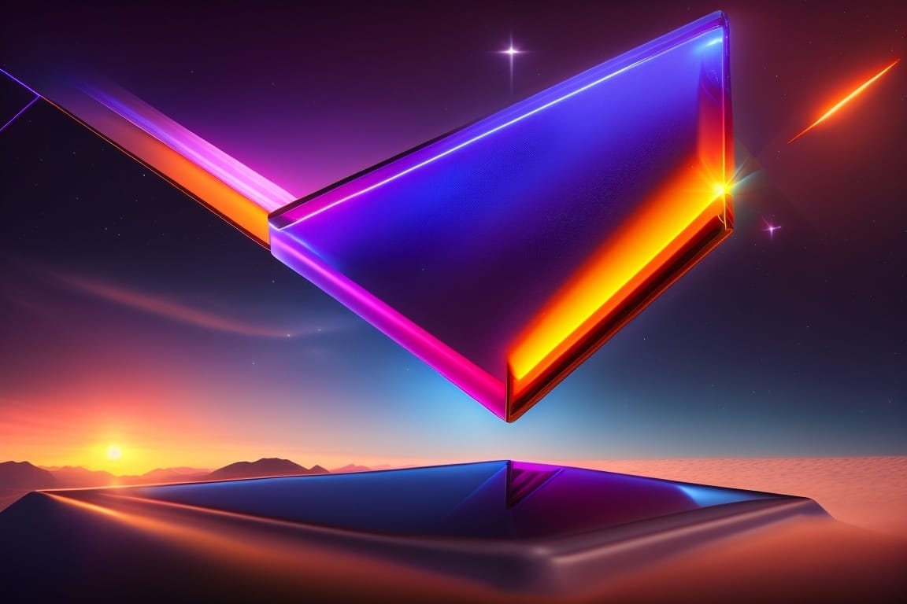

The Promise of Perovskite Solar Cells — Solar 3.0
Unlocking the Future of Renewable Energy 🔮 Can We Really Power the World with Renewable Energy? Experts estimate that powering the world with solar energy would require 115,6251 square miles of photovoltaic panels. Surprisingly, this would only occupy 1% of the Saharan desert. However, installing all those panels would be cheaper than using nuclear fuel. Is solar energy powerful enough to meet the world's energy needs and help mitigate climate change? Let"s explore the possibilities. Sol
Unlocking the Future of Renewable Energy 🔮
Can We Really Power the World with Renewable Energy?
1%Surprisingly, this would only occupy 1% of the Saharan desertExperts estimate that powering the world with solar energy would require 115,6251 square miles of photovoltaic panels. Surprisingly, this would only occupy 1% of the Saharan desert. However, installing all those panels would be cheaper than using nuclear fuel.
Is solar energy powerful enough to meet the world's energy needs and help mitigate climate change? Let"s explore the possibilities.
Solar power is lauded for its positive environmental impact but remains largely unused due to its limited efficiency and cost. Solar 3.0's new perovskite system could revolutionize energy production.
What is Solar 3.0?
TechnologyThe applied tools, systems, and infrastructure through which scientific knowledge is put to practical use.In the Lexicon →Perovskite is a groundbreaking technology, offering superior efficiency and longevity compared to traditional solar panel designs. Utilizing perovskite material, these lightweight and flexible panels are easy to install and maintain, enabling use on surfaces never before suitable for solar panels. Imagine it as a vinyl sticker or fabric you can stick virtually anywhere.
How Solar 3.0 Works
31%This technology is significantly more efficient than traditional solar panels, with an impressive conversion rate of sunlight to energy…This solar technology employs advanced technology to absorb more sunlight than traditional silicon panels. They consist of thin, flexible cells which convert sunlight into electricity. Advanced engineering enables these solar panels to utilize more of the sunlight, resulting in greater electricity output, even in overcast areas.
SiliconSemiconductor material used in computer chip manufacturingIn the Lexicon →This technology is significantly more efficient than traditional solar panels, with an impressive conversion rate of sunlight to energy nearing 31%,2 compared to average and affordable solar panels at 15-20%3 . These improved results stem from innovative engineering and improved materials, optimized to capture more solar energy.
Solar 3.0 has the potential to transform how solar energy is used. It is incredibly durable and flexible, making it ideal for remote or tough locations, supplying renewable energy to those without access to electricity.